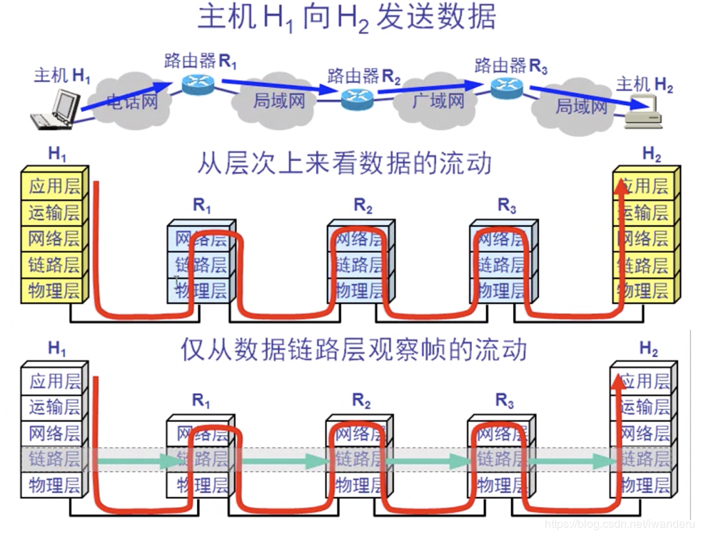
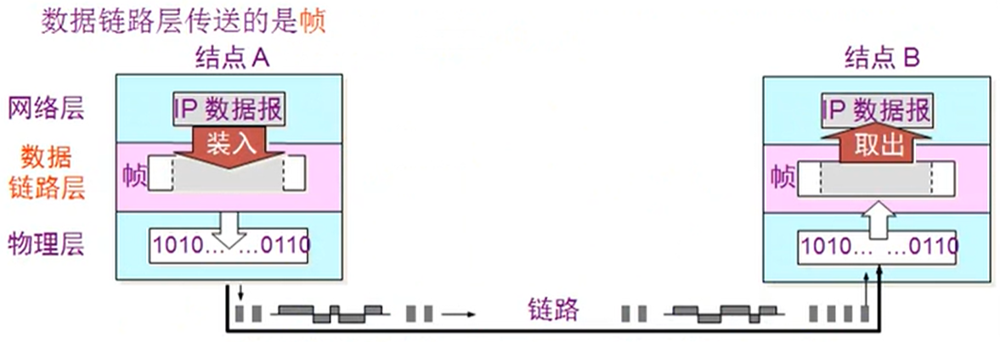
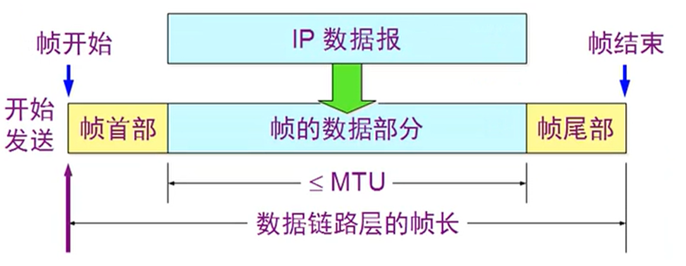
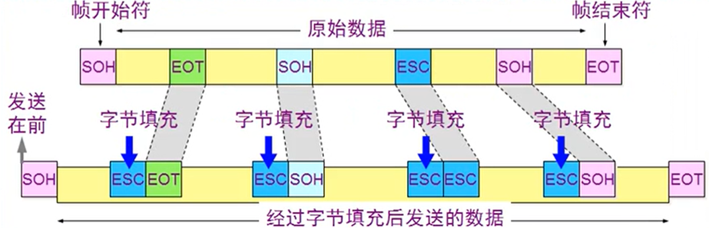
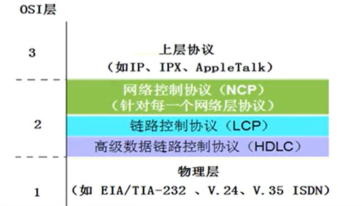
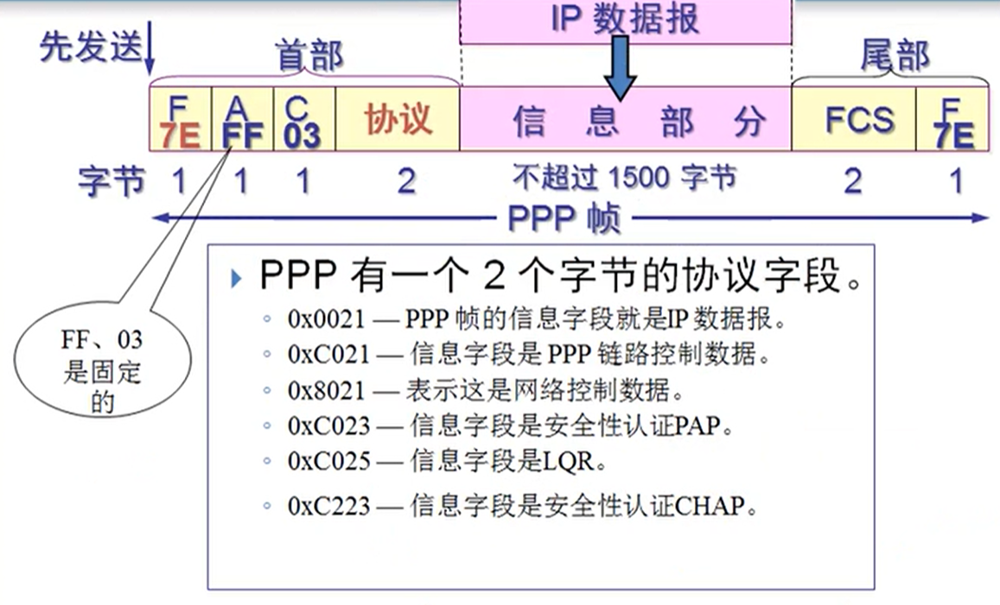
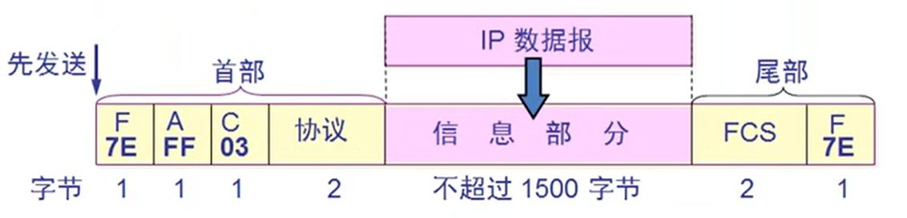

数据链路层基本概念及简单模型 链接到标题
数据链路层的简单模型:

数据链路层使用的信道主要有两种类型：
- 点对点信道。这种信道使用一对一的点对点通信方式。
- 广播信道。这种信道使用一对多的广播通信方式，因此过程比较复杂，广播信道上连接的主机很多，因此必须使用专用的共享信道协议来协调这些主机的数据发送。
链路(link) 链接到标题
- 一条点到点的物理线路段，中间没有任何其他的交换结点。
- 一条链路只是一条通路的一个组成部分
数据链路(data link) 链接到标题
除了物理线路外，还必须有通信协议来控制这些数据的传输，若把实现这些协议的硬件和软件加到链路上，就构成了数据链路，现最常用的方法是使用适配器(即网卡)来实现这些协议的硬件和软件，一般的适配器都包括了数据链路层和物理层这两层的功能
帧：数据，帧头，帧尾，物理层地址 校验值

数据链路层的三个基本问题 链接到标题
封装成帧 链接到标题
封装成帧就是在一段数据的前后分别添加首部和尾部，然后就构成了一个帧，确定帧的界限，首部和尾部的一个重要作用就是进行帧定界。

透明传输 链接到标题
透明传输，如果传输的数据是 ascii 码中 95 个字符集时，一切正常，若传输的数据出现了 EOT，被接收端误认为 EOT 前是一个帧，后面的当作无效帧丢弃。
字节填充法解决透明传输的问题 链接到标题
发送端的数据链路层在数据中出现控制字符“SOH”或“EOT”的前面插入一个转移字符“ESC”(16 进制编码是 1b).

字节填充或字符填充：接收端的数据链路层在将数据送往网络层之前删除插入的转义字符,如果转义字符也出现数据当中，那么应在转义字符前插入一个转义字符。
当接受端收到连续的两个转义字符时，就删除其中前面的一个。
差错控制 链接到标题
传输过程中可能会产生比特差错，在一段时间内，传输错误的比特占所传输比特总数的比率称为误码率 BER，误码率与信噪比 有很大的关系。
为了保证数据传输的可靠性，在计算机网络传输数据时，必须采用各种差错检测错数。常用循环冗余检验，在数据后面添加冗余码称为帧检验序列 FCS(Frame Check Sequence).
CRC 是一种常用的检错方法，而 FCS 是添加在数据后面的冗余码.
FCS 可以用 CRC 方法得出，但 CRC 并非用来获得 FCS 的唯一方法.
使用点对点信道的数据链路层(广域网) 链接到标题
1992 年制定了 ppp(Point-to-Point Protocol)协议，经过 1993 年和 1994 年的修订，现在的 ppp 协议已经成为因特网的正式标准,ppp 协议有三个组成部分:
- 数据链路层协议可以用于异步串行或同步串行介质
- 它使用 LCP(链路控制协议)建立并维护数据链路连接
- 网络控制协议(NCP)允许在点到点连接上使用多种网络层协议

现在全世界使用最多的数据链路层协议是点对点协议 ppp,用户使用拨号电话线接入因特网时，一般都是使用 ppp 协议.

ppp 协议应该满足的要求:
- 简单—首要要求
- 封装成帧
- 透明性
- 多种网络层协议
- 多种类型链路
- 差错检测
- 检测连接状态
- 最大传送单元
- 网络层地址协商
- 数据压缩协商
ppp 协议不需要满足的要求:
- 纠错
- 流量控制
- 序号
- 多点线路
- 半双工或单工链路
ppp 协议帧格式
- 标志字段 F = 0x7E
- 地址字段 A 只置为 0xFF 地址字段实际并不起作用
- 控制字段 C 通常置为 0x03
- ppp 是面向字节的，所有的 ppp 帧长度都是整数字节

字节填充 链接到标题
- 将信息字段中出现的每个 0x7E 字节转变称为 2 字节序列 0x7D 0x5E
- 若信息字段中出现一个 0x7D 的字节，则将其转变成为 2 字节序列 0x7D 0x5D
- 若信息字段出现 ascii 码的控制字符，则在该字符前面加入一个 0x7D，同时将该字符的编码加以改变
零比特填充 链接到标题
ppp 协议用在 SONET/SDH 链路时，是使用同步传输(一连串比特连续发送)。这时 ppp 协议采用零比特填充方法来实现透明传输。
在发送端，只要发现有 5 个连续 1，则立即填入一个 0(零比特填充法).接收端对帧中的比特流进行扫描。每当发现 5 个连续的 1 时，就把 5 个连续 1 后的一个 0 删除。
ppp 协议不使用序号和确认机制的原因 链接到标题
- 在数据链路层出现差错的概率不大时，使用比较简单的 ppp 协议较为合理。
- 在因特网环境下，ppp 的信息字段放入的数据是 ip 数据报。数据链路层的可靠传输并不能够保证网络层的传输也是可靠的。
- 帧检验序列 FCS 字段可保证无差错接受。
ppp 协议工作状态 链接到标题
- 当用户拨号接入 ISP 时，路由器的调制解调器对拨号做出确认，并建立一条物理连接
- PC 机向路由器发送一系列的 LCP 分组(封装成多个 ppp 帧)。 这些分组及其响应选择一些 ppp 参数，和进行网络层配置，NCP 给新接入的 PC 机分配一个临时的 IP 地址，使 PC 机成为因特网上的一个主机。
- 通信完毕时，NCP 释放网络层连接，收回原来分配出去的 IP 地址，接着，LCP 释放数据链路层连接，最后释放的时物理层的连接。